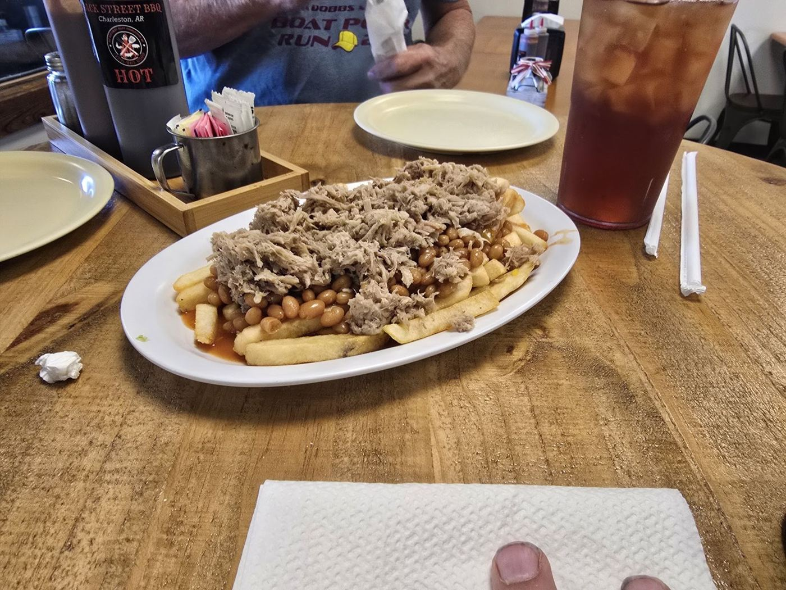

Receipts
CUSTOMER RECEIPTS
4.5★ AVG · 55 GOOGLE REVIEWS
#001 ················ ★★★★★
Amazing barbecue restaurant in downtown Charleston. Regardless of how packed they are I'm always well taken care of. Plenty of awesome menu items and great tasting food. Easily my favorite restaurant for barbecue locally
Amazing barbecue restaurant in downtown Charleston. Regardless of how packed they are I'm always well taken care of. Plenty of awesome menu items and great tasting food. Easily my favorite restaurant for barbecue locally
#002 ················ ★★★★★
Fantastic barbecue! The pulled pork is amazing. The restaurant has the perfect BBQ joint vibe. And the staff are super friendly. I just tried my first Eye of the Tiger. Yum! It won't be my last!
Fantastic barbecue! The pulled pork is amazing. The restaurant has the perfect BBQ joint vibe. And the staff are super friendly. I just tried my first Eye of the Tiger. Yum! It won't be my last!
#003 ················ ★★★★★
Ribs were excellent as were the sides, I had the loaded baked potato and fried okra. The server was very nice and very good at her job 5 Stars service all the way!! Also spoke with the owner who was super nice too. Friendly place with fair prices and good home cooking!!
Ribs were excellent as were the sides, I had the loaded baked potato and fried okra. The server was very nice and very good at her job 5 Stars service all the way!! Also spoke with the owner who was super nice too. Friendly place with fair prices and good home cooking!!
#004 ················ ★★★★★
It's always been a great experience any time I've gone, whether it's lunch with co-workers or dinner with the family. The owners and staff are always friendly and have time to check on you no matter how busy they are and the food as ALWAYS WONDERFUL. I would recommend them to anyone. They also have pulled pork by the pound to take home for later.
It's always been a great experience any time I've gone, whether it's lunch with co-workers or dinner with the family. The owners and staff are always friendly and have time to check on you no matter how busy they are and the food as ALWAYS WONDERFUL. I would recommend them to anyone. They also have pulled pork by the pound to take home for later.
#005 ················ ★★★★★
The food was wonderful. It was the perfect place for a tasty meal on a mid week night when we just wanted to relax
The food was wonderful. It was the perfect place for a tasty meal on a mid week night when we just wanted to relax
#006 ················ ★★★★★
Great BBQ chicken and fried okra. But last visit about 1:30 pm they were out of chicken. Either great business increase or PP planning. Probably need to call ahead 😕
Great BBQ chicken and fried okra. But last visit about 1:30 pm they were out of chicken. Either great business increase or PP planning. Probably need to call ahead 😕
#007 ················ ★★★★★
Once upon a time, there were three little pigs. Until they ended up on this amazing sandwich, that is.
Once upon a time, there were three little pigs. Until they ended up on this amazing sandwich, that is.